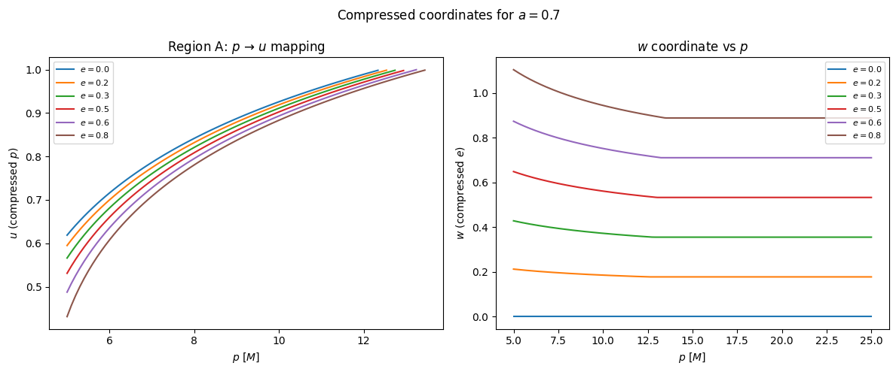
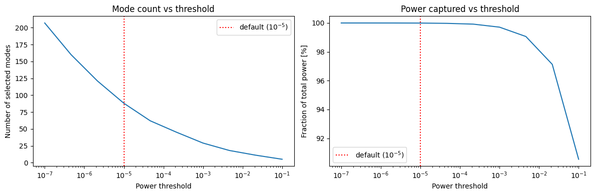
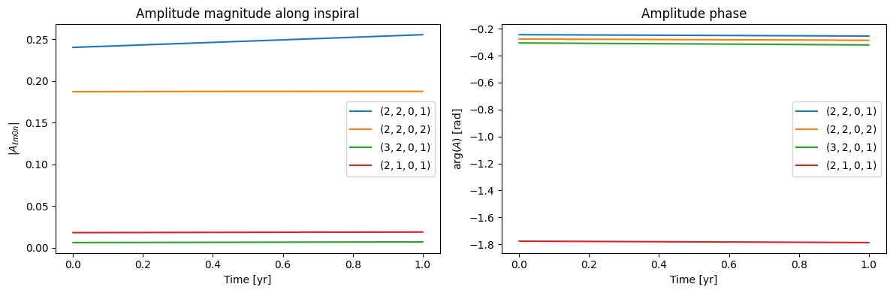
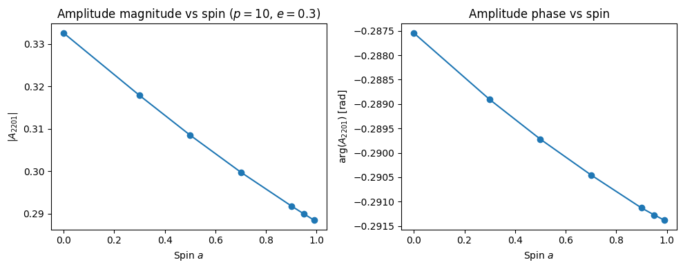

03 — Teukolsky Amplitude Interpolation
This notebook covers fewtrax.amplitude and fewtrax.data.loader.
Topics:
The FEW precomputed amplitude data (
ZNAmps_l10_m10_n55_DS2Outer.h5)The \((a, p, e)\) → \((u, w, z)\) coordinate compression (Regions A and B)
Mode ordering (FEW’s
m0sort)Evaluating \(A_{\ell m k n}\) along a trajectory
Mode selection by relative power
Background: Teukolsky Amplitudes
The gravitational-wave emission from an EMRI is decomposed into Teukolsky modes \(Z^\infty_{\ell m k n}(a, p, e)\). For the KerrEccentricEquatorial model these are parameterised by four integers \((\ell, m, k, n)\):
\(\ell, m\): angular harmonic numbers (\(\ell \ge 2\), \(|m| \le \ell\))
\(k\): polar harmonic number (always \(k = 0\) for equatorial orbits)
\(n\): radial harmonic number (\(n \in [-55, 55]\) for the FEW grid)
The dominant modes are typically \((2, 2, 0, n)\) for small \(n\). The FEW amplitude file stores bicubic B-spline coefficients for all \(6{,}993\) modes in a compressed coordinate system.
Compressed Coordinates
The physical domain \((a, p, e)\) is mapped to the unit cube \([0,1]^3\) via:
Coordinate |
Physical |
Compressed |
|---|---|---|
\(u\) |
\(p\) (near separatrix) |
\(u = \left[\log_2\left(1 + \frac{p - p_{\rm sep}}{\Delta p_{\rm max}}\right)\right]^{1/3}\) |
\(w\) |
\(e\) |
\(w = e / S_{\rm ecc}(u, z)\) |
\(z\) |
\(a\) |
\(z = (\chi(a) - \chi_{\rm min}) / (\chi_{\rm max} - \chi_{\rm min})\), \(\chi = (1-a)^{1/3}\) |
Two regions are defined:
Region A (\(p \le p_{\rm sep} + \Delta p_{\rm max}\)): near-separatrix, parametrised by \((u, w, z)\) with \(\alpha = 1/3\)
Region B (\(p > p_{\rm sep} + \Delta p_{\rm max}\)): far region, different compression
[1]:
import os
import numpy as np
import matplotlib.pyplot as plt
import jax
import jax.numpy as jnp
jax.config.update("jax_enable_x64", True)
from dotenv import load_dotenv
load_dotenv()
DATA_DIR = os.getenv("FEW_DATA_DIR")
print(f"FEW_DATA_DIR = {DATA_DIR}")
from fewtrax.data import load_amplitude_data, load_flux_data
from fewtrax.amplitude import AmplitudeInterpolator
print("Loading amplitude data (may take a moment)…")
amp_data = load_amplitude_data(DATA_DIR)
amp = AmplitudeInterpolator(amp_data)
print(f"Loaded {amp.n_modes} modes.")
FEW_DATA_DIR = /Users/bertd/Documents/PhD/LISA/Codes/FastEMRIWaveforms/src/few/data
Loading amplitude data (may take a moment)…
Loaded 6993 modes.
3.1 Mode Index Arrays
The modes are ordered in FEW’s m0sort convention: all \(m=0\) modes come first (sorted by \(\ell\) then \(n\)), followed by \(m \ne 0\) modes in the standard enumeration order. This ordering matches the rows of the HDF5 coefficient array.
[2]:
l_arr = amp.l_arr
m_arr = amp.m_arr
n_arr = amp.n_arr
print("First 10 modes (m=0 group):")
for i in range(10):
print(f" [{i:4d}] l={l_arr[i]:2d} m={m_arr[i]:2d} k=0 n={n_arr[i]:3d}")
# Count m=0 modes
n_m0 = int(np.sum(m_arr == 0))
print(f"\nTotal m=0 modes: {n_m0}")
print("\nFirst 5 m≠0 modes:")
nonzero = np.where(m_arr != 0)[0][:5]
for i in nonzero:
print(f" [{i:4d}] l={l_arr[i]:2d} m={m_arr[i]:2d} k=0 n={n_arr[i]:3d}")
First 10 modes (m=0 group):
[ 0] l= 2 m= 0 k=0 n=-55
[ 1] l= 2 m= 0 k=0 n=-54
[ 2] l= 2 m= 0 k=0 n=-53
[ 3] l= 2 m= 0 k=0 n=-52
[ 4] l= 2 m= 0 k=0 n=-51
[ 5] l= 2 m= 0 k=0 n=-50
[ 6] l= 2 m= 0 k=0 n=-49
[ 7] l= 2 m= 0 k=0 n=-48
[ 8] l= 2 m= 0 k=0 n=-47
[ 9] l= 2 m= 0 k=0 n=-46
Total m=0 modes: 999
First 5 m≠0 modes:
[ 999] l= 2 m= 1 k=0 n=-55
[1000] l= 2 m= 1 k=0 n=-54
[1001] l= 2 m= 1 k=0 n=-53
[1002] l= 2 m= 1 k=0 n=-52
[1003] l= 2 m= 1 k=0 n=-51
3.2 Coordinate Mapping Visualisation
Let’s see how a range of \((p, e)\) values map into the \((u, w)\) compressed space.
[3]:
from fewtrax.utils.coordinates import kerrecceq_forward_map
from fewtrax.utils.geodesic import get_separatrix
a = 0.7
# Build a grid of (p, e) values and compute (u, w)
e_vals = np.linspace(0.0, 0.8, 6)
p_vals = np.linspace(5, 25, 200)
fig, axes = plt.subplots(1, 2, figsize=(12, 5))
for e_val in e_vals:
u_arr, w_arr, z_arr, in_A = zip(*[
kerrecceq_forward_map(a, p, e_val, kind="amplitude")
for p in p_vals
])
u_arr = np.array([float(x) for x in u_arr])
w_arr = np.array([float(x) for x in w_arr])
# Region A portion
in_A_np = np.array([bool(x) for x in in_A])
axes[0].plot(p_vals[in_A_np], u_arr[in_A_np], label=f"$e={e_val:.1f}$")
axes[1].plot(p_vals, w_arr, label=f"$e={e_val:.1f}$")
axes[0].set_xlabel("$p$ [$M$]")
axes[0].set_ylabel("$u$ (compressed $p$)")
axes[0].set_title("Region A: $p$ → $u$ mapping")
axes[0].legend(fontsize=8)
axes[1].set_xlabel("$p$ [$M$]")
axes[1].set_ylabel("$w$ (compressed $e$)")
axes[1].set_title("$w$ coordinate vs $p$")
axes[1].legend(fontsize=8)
plt.suptitle(f"Compressed coordinates for $a = {a}$")
plt.tight_layout()
plt.show()

3.3 Evaluating Amplitudes Along a Trajectory
AmplitudeInterpolator.evaluate(a, p, e) returns an array of shape (N_traj, N_modes) of complex amplitudes. The evaluation uses scipy’s bisplev with the FEW B-spline coefficients, linearly interpolating between adjacent spin slices.
[4]:
from fewtrax.trajectory import run_inspiral
flux_data = load_flux_data(DATA_DIR)
# Get a trajectory
a = 0.7
t, p, e, *_ = run_inspiral(
a=a, p0=12.0, e0=0.4, T=1.0,
flux_data=flux_data, M=1e6, mu=10.0, dense_steps=50,
)
p_np = np.asarray(p)
e_np = np.asarray(e)
valid = ~np.isnan(p_np)
p_np, e_np = p_np[valid], e_np[valid]
print(f"Evaluating amplitudes for {valid.sum()} trajectory points…")
amps = amp.evaluate(a=a, p=p_np, e=e_np)
print(f"Amplitude array shape: {amps.shape} (N_traj × N_modes)")
Evaluating amplitudes for 50 trajectory points…
Amplitude array shape: (50, 6993) (N_traj × N_modes)
[5]:
# Compute power |A|^2 for each mode, averaged over trajectory
power = np.mean(np.abs(amps)**2, axis=0)
total_power = power.sum()
# Sort by power
order = np.argsort(power)[::-1]
print("Top 10 modes by mean power:")
print(f"{'Rank':>4} {'Index':>6} {'(l,m,n)':>12} {'Frac. power':>12}")
print("-" * 40)
for rank, idx in enumerate(order[:10]):
lmn = f"({l_arr[idx]},{m_arr[idx]},{n_arr[idx]})"
print(f"{rank+1:4d} {idx:6d} {lmn:>12} {power[idx]/total_power:12.4%}")
Top 10 modes by mean power:
Rank Index (l,m,n) Frac. power
----------------------------------------
1 1166 (2,2,1) 30.8809%
2 1165 (2,2,0) 20.2686%
3 1167 (2,2,2) 17.6716%
4 1164 (2,2,-1) 14.6029%
5 1168 (2,2,3) 7.1191%
6 1169 (2,2,4) 2.3836%
7 1500 (3,3,2) 1.1570%
8 1501 (3,3,3) 0.9293%
9 1497 (3,3,-1) 0.7198%
10 1170 (2,2,5) 0.7110%
3.4 Mode Selection by Power Threshold
select_modes returns the indices of modes whose mean power exceeds a fraction threshold of the dominant mode’s power. This is a crucial step for efficiency: several hundreds of modes out of 6993 capture >99% of the power.
[7]:
fig, axes = plt.subplots(1, 2, figsize=(12, 4))
thresholds = np.logspace(-7, -1, 10)
n_modes_selected = []
frac_power = []
for thr in thresholds:
sel = amp.select_modes(a, p_np, e_np, threshold=thr)
n_modes_selected.append(len(sel))
frac_power.append(power[sel].sum() / total_power)
axes[0].semilogx(thresholds, n_modes_selected)
axes[0].set_xlabel("Power threshold")
axes[0].set_ylabel("Number of selected modes")
axes[0].set_title("Mode count vs threshold")
axes[0].axvline(1e-5, color="r", linestyle=":", label="default ($10^{-5}$)")
axes[0].legend()
axes[1].semilogx(thresholds, np.array(frac_power) * 100)
axes[1].set_xlabel("Power threshold")
axes[1].set_ylabel("Fraction of total power [%]")
axes[1].set_title("Power captured vs threshold")
axes[1].axvline(1e-5, color="r", linestyle=":", label="default ($10^{-5}$)")
axes[1].legend()
plt.tight_layout()
plt.show()
sel = amp.select_modes(a, p_np, e_np, threshold=1e-5)
print(f"\nDefault threshold 1e-5: {len(sel)} modes, {power[sel].sum()/total_power:.5%} of total power")

Default threshold 1e-5: 88 modes, 99.99331% of total power
3.5 Amplitude Time Evolution
As the orbit inspirals, the amplitudes change. The dominant \((2,2,0,1)\) mode grows as \(p\) decreases.
[8]:
# Find a few specific modes
def find_mode(l, m, n):
for i in range(len(l_arr)):
if l_arr[i] == l and m_arr[i] == m and n_arr[i] == n:
return i
return None
modes_to_show = [(2, 2, 1), (2, 2, 2), (3, 2, 1), (2, 1, 1)]
t_yr_valid = np.asarray(t)[valid] / (365.25 * 24 * 3600)
fig, axes = plt.subplots(1, 2, figsize=(12, 4))
for (l, m, n) in modes_to_show:
idx = find_mode(l, m, n)
if idx is None:
print(f"Mode ({l},{m},0,{n}) not found")
continue
A = amps[:, idx]
axes[0].plot(t_yr_valid, np.abs(A), label=f"$({l},{m},0,{n})$")
axes[1].plot(t_yr_valid, np.angle(A), label=f"$({l},{m},0,{n})$")
axes[0].set_xlabel("Time [yr]")
axes[0].set_ylabel("$|A_{\\ell m 0 n}|$")
axes[0].set_title("Amplitude magnitude along inspiral")
axes[0].legend()
axes[1].set_xlabel("Time [yr]")
axes[1].set_ylabel(r"$\arg(A)$ [rad]")
axes[1].set_title("Amplitude phase")
axes[1].legend()
plt.tight_layout()
plt.show()

3.6 Spin Dependence of the Dominant Mode
Let’s see how the amplitude of the \((2,2,0,1)\) mode varies with spin \(a\) at a fixed orbital point.
[9]:
idx_221 = find_mode(2, 2, 1)
a_vals = np.array([0.0, 0.3, 0.5, 0.7, 0.9, 0.95, 0.99])
p_fixed = np.array([10.0])
e_fixed = np.array([0.3])
A_vals = []
for a_v in a_vals:
A = amp.evaluate(a=a_v, p=p_fixed, e=e_fixed, specific_modes=np.array([idx_221]))
A_vals.append(complex(A[0, 0]))
A_vals = np.array(A_vals)
fig, axes = plt.subplots(1, 2, figsize=(10, 4))
axes[0].plot(a_vals, np.abs(A_vals), "o-")
axes[0].set_xlabel("Spin $a$")
axes[0].set_ylabel("$|A_{2201}|$")
axes[0].set_title("Amplitude magnitude vs spin ($p=10$, $e=0.3$)")
axes[1].plot(a_vals, np.angle(A_vals), "o-")
axes[1].set_xlabel("Spin $a$")
axes[1].set_ylabel(r"$\arg(A_{2201})$ [rad]")
axes[1].set_title("Amplitude phase vs spin")
plt.tight_layout()
plt.show()

Summary
Component |
Description |
|---|---|
|
Reads the HDF5 file, returns |
|
Wraps the data for evaluation |
|
Returns |
|
Returns indices of modes above power threshold |
Mode ordering |
FEW |
Coefficient axes |
|
Next: 04_mode_summation.ipynb — summing the harmonic modes to produce \(h_+\) and \(h_\times\).